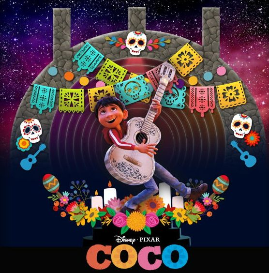

| film favorit | keterangan |
|  | Film Coco berkisah tentang Miguel (Anthony Gonzalez), seorang bocah laki-laki asal Meksiko yang bertekad ingin menjadi seorang musisi terkenal.Namun, keinginannya ditentang oleh keluarganya yang memiliki kenangan buruk dengan musik. |